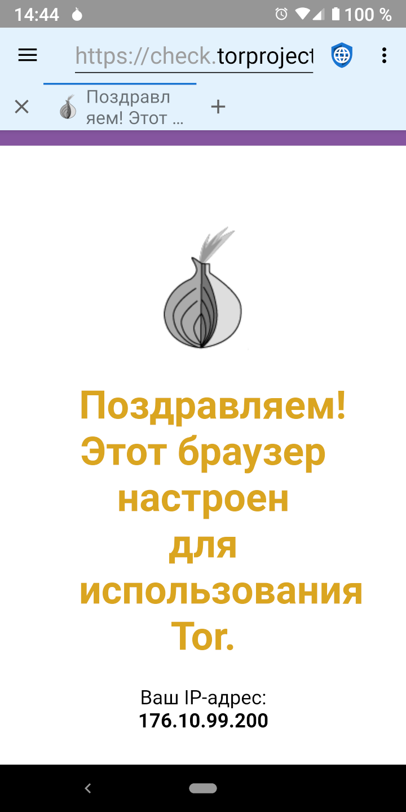

Proxies and Their Limits Proxies and Their Limits
Proxies and Their Limits Proxies and Their LimitsСуществуют две основные отрицательные категории субъектов, которые нарушают конфиденциальность в интернете: злонамеренные правительства, имеющие доступ к интернет-провайдерам и крупные корпорации, которые управляют социальными и рекламными сетями. Proxies like TOR (The Onion Router) and I2P (the Invisible Internet Project) are useful in protecting privacy from malicious governments (which spy on traffic in transit) but not from mega corporations (which embed malicious code on web servers).
 Злонамеренные правительства
Злонамеренные правительстваЗлонамеренные правительства часто следят за своими гражданами, чтобы наказать за инакомыслие или правозащитную деятельность. Как правило, они либо работают с локальными интернет-провайдерами, либо могут заставить их раскрыть информацию, содержащую статистику посещений сайтов нужного пользователя. Layered proxies are designed to defeat this infringement of privacy by encrypting the traffic from a user’s device and routing it through multiple servers on the internet before sending it on to the final destination. This means that no individual ISP, server, or website, can know both the IP address of the user’s device and the IP address of the final web server. Malicious governments and the ISPs they control cannot tell which web servers a user is accessing, although they can tell that the user is using a layered proxy service. In some parts of the world, using proxies could be construed as an evidence of illegal behavior (“If you didn’t have anything to hide you wouldn’t be encrypting your traffic”) and users could be punished because governments assume they are doing something that is prohibited. Thus, proxies can be helpful, but they aren’t a panacea.
Крупные корпорацииКогда пользователь подключается к веб-серверу, сервер может видеть IP-адрес пользователя. Несмотря на то, что пока это работает не идеально, IP-адреса могут быть превращены в физические адреса с достаточным количеством точности. Small web servers typically rely on IP addresses to identify the location of the users visiting their site. Proxies are a good solution to mask the user’s location from these servers. Но крупные корпорации, которые владеют социальными и рекламными сетями, используют весь профиль информации, который предназначен для отслеживания пользователей через устройства и IP-адреса. В этих профилях используются различные методы идентификации пользователей, включая JavaScript, файлы cookie, идентификаторы отслеживания и отпечаток браузера. Поскольку подавляющее большинство веб-сайтов в интернете загружают рекламу от одной из основных сетей или встраивают значки социальных сетей с ассоциированным с ними JavaScript, эти корпорации имеют встроенные профили почти для каждого пользователя в интернете и могут отслеживать интернет-активность на несвязанных сайтах.
Они отслеживают каждый посещаемый сайт, все, что приобретается, каждую кредитную карту, используемую для совершения покупки, каждый адрес, куда отправляются товары, метаданные GPS каждого изображения, загружаемого в интернет. Они создают профиль из возраста пользователя, пола, семейного положения, адреса, политических пристрастий, религиозной принадлежности, семейных обстоятельств, количества домашних животных и всего остального, что им удается получить. Они даже скупают базы данных транзакций по кредитным картам в местных магазинах, поэтому они могут отслеживать автономные модели покупок пользователей в своих профилях. Because they already have much more accurate address information about a user than an IP address discloses, proxies provides no real privacy protection against mega corporations.
Единственной и самой лучшей защитой конфиденциальности от крупных корпораций является просмотр веб-сайта с отключенным JavaScript, за которым следует блокирование рекламных сетей, отключение файлов cookie и хранилища DOM, а также использование браузера, отпечаток которого трудно определить.
 Using Proxies
Using ProxiesDespite their limitations, proxies can be useful in some circumstances. Tor and I2p have Android apps that make it easy to use their proxy networks. When proxying is turned on in Privacy Browser, the app bar will have a light blue background instead of the default light grey. Because traffic is being routed through several proxy nodes, using a layered proxy is often much slower than connecting directly to the internet.
 Загрузка файлов через сеть Tor
Загрузка файлов через сеть TorWhen Orbot is operating in proxy mode, browsing the internet using Privacy Browser will be routed through the proxy, but file downloads will not. This is because Privacy Browser uses Android’s builtin download manager to download files, which doesn’t have a proxy option. Users who want to download files via Orbot need to enable its VPN mode. There is currently no way to download files through I2P.